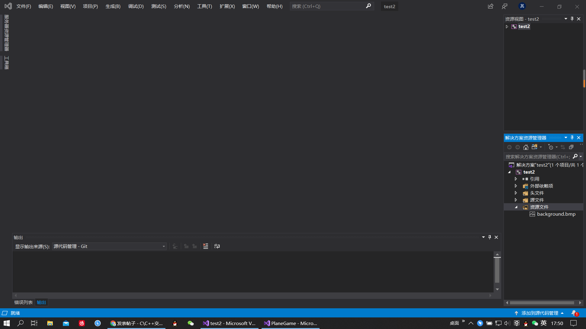

- 
-
摘要: Category类似enum，只能取有限的几个值，在机器学习里的分类问题上，可能用得到。在类别的数量很少的情况下，分类数据非常节省内存...
posted @ 2020-07-01 15:08:52 -
摘要: 今日内容数据库的基本概念MySQL数据库软件安装卸载配置SQL数据库的基本概念1. 数据库的基本概念MySQL数据库软件 安装 卸载 配置 SQ...
posted @ 2020-07-01 15:05:03 -
摘要: 公元234年，蜀汉丞相诸葛孔明再次北伐。一日，与司马仲达所率魏军两军相峙，二人阵前舌战。司马曰：“诸葛村夫，吾与汝相斗数年，斗兵...
posted @ 2020-06-08 10:16:11 -
摘要: 小波作为一种信号处理的工具在脑波分析中应用很多，常用的有连续小波变换、小波包分析等等。小波涉及的相关介绍和公式推导有很多资料，...
posted @ 2020-07-01 15:26:12 -
摘要: 这是作者网络安全自学教程系列，主要是关于安全工具和实践操作的在线笔记，特分享出来与博友们学习，希望您喜欢，一起进步。前文分享了V...
posted @ 2020-05-13 23:14:13 -
摘要: 消费组组（Consumer group）可以说是kafka很有亮点的一个设计。传统的消息引擎处理模型主要有两种，队列模型，和发布-订阅模型。 队列模...
posted @ 2020-04-08 21:35:22 -
摘要: 一、Protobuf通信协议概述 关于Protobuf通信协议语法可以参阅：https://blog.csdn.net/qq_41453285/article/details/106731318 关于Proto...
posted @ 2020-06-14 20:28:34 -
摘要: 面试官：出现了性能问题，该怎么去排查呢？ 程序猿：接口响应那么慢，时间都花到哪里去了？ 运维喵：为什么你的应用跑着跑着，CPU 就接近...
posted @ 2020-03-28 02:45:47 -
摘要: 有个朋友说，他十天写了 20000 行代码，当时我的膝盖就直接给它了，怎么会有这么强的选手？？！！ 但是是不是代码写得越多越快越好呢？如果...
posted @ 2020-04-25 23:29:14 -
摘要: 想找到心仪的工作，却不知道简历该怎么写？越来越多的求职者开始意识到简历的重要性了，这可不仅仅是一张陈述事实的纸，它能起到的作用超乎...
posted @ 2020-06-27 12:00:00 -
摘要: Django官网已公布了3.1版本预计发布时间定于2020年8月，掐指一算也没剩下几个月了，希望新版发布不会受新冠肺炎的影响。尽管最终版本尚未...
posted @ 2020-03-30 15:30:19 -
摘要: 目录,更新ing,学习Java的点滴记录 目录放在这里太长了,附目录链接大家可以自由选择查看--------Java学习目录 Spring知识 一丶SpringIOC初步...
posted @ 2020-06-29 07:52:50